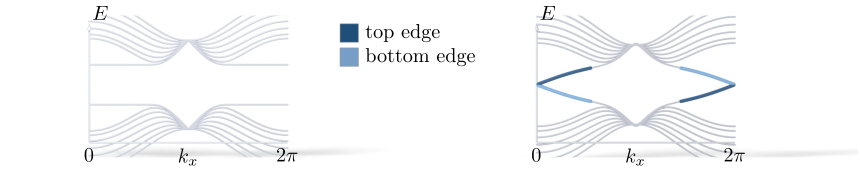

Advanced Quantum Materials 2027 · All lectures · Lecture notes
Session 4. Electrons in a Magnetic Field, Quantum Hall Effect and Landau Levels
4.19 The Haldane model and the quantum Hall effect without Landau levels
This section is a recap of the Haldane model, which we built in Sections 3.10 and 3.10b. We come back to it because it closes the argument of this session. Everything above needed a real magnetic field to give Landau levels, and the Haldane model shows that the quantized Hall conductance does not need one.
We start from the honeycomb lattice with first-neighbor hopping, which has two Dirac cones at \(K\) and \(K'\). A staggered onsite potential gives the same mass at both valleys, so the two halves of (3.8) cancel and \(C=0\). A purely imaginary second-neighbor hopping breaks time-reversal symmetry and gives masses of opposite sign at the two valleys. The two halves then add, which gives \(C=\pm1\), an insulating bulk and a chiral edge state, all with \(B=0\).

What this session adds is the adiabatic connection between the two routes. We start in the Haldane model at zero field, we switch on a real magnetic field, and then we switch off the Haldane coupling. At every step of this path the bulk gap stays open and the chiral edge state survives. So the Chern insulator of the Haldane model and the quantum Hall state of the Landau levels are topologically equivalent. They are the same phase of matter, reached once with a magnetic field and once without it.
Along the path from the Haldane model to the quantum Hall state, which condition has to hold at every step?
Show the answers
- A. ✗ False
This is false. The path starts at zero field and then switches on a real magnetic field. At the end of the path the field is not zero.
- B. ✓ True
This is true. The Chern number can change only if the gap closes. If the gap stays open all along the path, the two end points have the same Chern number.
- C. ✗ False
This is false. The path ends by switching off the Haldane coupling, so at the end it is zero. If it stayed fixed, the end point would not be the ordinary quantum Hall state.
Notebook check-in: session4.ipynb, “Topological equivalence between the Quantum Hall state and a Chern insulator” (Challenge), and “Topological domains in the quantum Hall state” (Challenge)
Build the Haldane model, switch a magnetic field on and off numerically together with the Haldane coupling, and follow the bulk gap and the Chern number along the adiabatic path described above. The “topological domains” exercise lets you study spatial regions where the two couplings compete directly, which is a practical version of the equivalence argument that we just gave.
One system has a field and Landau levels, and the other has no field. Why do we call them the same phase?
Show the answers
- A. ✗ False
This is false. The flux through a plaquette is gauge invariant, and the field cannot be removed by a gauge change. In the Haldane model the flux through the unit cell is zero while it is finite for the Landau levels, and the phase is the same.
- B. ✓ True
This is true. A phase is defined by what cannot change without closing the gap. The Chern number is the same for both, and the field is only one of the two routes to it.
- C. ✗ False
This is false. The Haldane model at zero field has dispersive bands and no flat Landau levels, yet its Chern number is \(\pm1\), as the quantum Hall state with one filled level.
Try it. Run the cell, which interpolates between the Chern insulator at nu = 0 and the quantum Hall state at nu = 1. Follow the branch that crosses the gap in the first panel. It stays connected to the edge branch of the last panel, and it does not disappear at any step of the path.
- In Section 4.20 the Chern insulator at zero field is realized in Cr-doped (Bi,Sb)\(_2\)Te\(_3\) and in twisted graphene on boron nitride.
- In Section 6.16 the magnons of a honeycomb magnet get the Haldane coupling from a Dzyaloshinskii-Moriya interaction, with \(t_2=DS\).
- In Section 9.8 a vacancy in the Haldane model binds a state inside the gap, which tells it apart from a trivial insulator with the same gap.